Next: Fourier transform of a
Up: Properties of Fourier transforms
Previous: Fourier transform of DC
Contents
Index
Shifts and phase changes
Section 7.2 showed how time-shifting a signal changes the
phases of its sinusoidal components, and Section 8.4.3
showed how multiplying a signal by a complex sinusoid shifts its component
frequencies. These two effects have corresponding identities
involving the Fourier transform.
First we consider a time shift. If ![$X[n]$](img669.png) , as usual, is a complex-valued
signal that repeats every
, as usual, is a complex-valued
signal that repeats every  samples, let 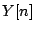 be delayed
samples, let 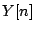 be delayed  samples:
samples:
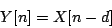
which also repeats every samples since 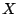 does. We can reduce the Fourier
transform of this way:
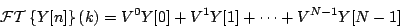
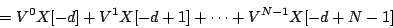
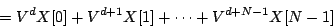
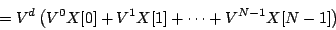
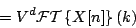
(The third line is just the second one with the terms summed in a
different order). We therefore get the Time Shift Formula for Fourier
Transforms:
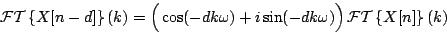
The Fourier transform of 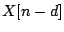 is a phase term times the Fourier transform
of . The phase is changed by 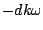, a
linear function of the frequency  .
.
Now suppose instead that we change our starting signal by multiplying
it by a complex exponential 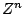 with angular frequency  :
:
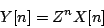
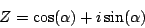
The Fourier transform is:
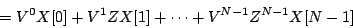
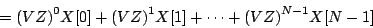
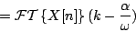
We therefore get the Phase Shift Formula for Fourier Transforms:
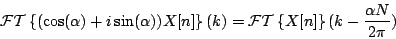
Next: Fourier transform of a
Up: Properties of Fourier transforms
Previous: Fourier transform of DC
Contents
Index
Miller Puckette
2006-12-30